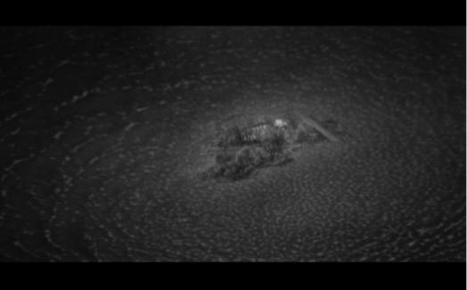

Şimdi esas olarak, sözünü ettiğimiz Şey’in özgül bir versiyonuna, simgesel ile Gerçek arasındaki aralığın kapandığı (kutsal ya da yasak bölge) Mıntıka’ya odaklanmak istiyorum. Daha açık ve kabaca söylersek onda doğrudan doğruya arzularımız somutlaşır (ya da, Kant’ın transandantal idealizminin kesin terimleriyle ifade edersek, sezgilerimiz bu bölgede doğrudan üretici hale gelirler - Kant’a göre bu sadece sonsuz tanrısal Aklı tanımlayan şeylerin durumudur).
İd-Makinesi olarak, yani tatmin edilmemiş fantazilerimizin doğrudan somutlaşmasını sağlayan bir mekanizma olarak Şey fikri, daima saygın değilse bile epey köklü denebilecek bir soyağacına sahiptir. Sinemada, her şey Fred Wilcox’un The Forbidden Planet (Yasak Gezegen, 1956) filmiyle başlar, burada Shakespeare’in The Tempest (Fırtına) eserindeki anlatı iskeleti uzak bir gezegene taşınmıştır: Bir adada, henüz bir başka erkekle karşılaşmamış kızıyla yalnız yaşayan bir babanın huzuru bir grup uzay seyehatçisinin adaya gelmesiyle altüst olur. Kısa bir süre sonra görünmeyen bir canavarın tuhaf saldırıları başlar ve filmin sonunda bu canavarın, babanın ensest huzurunu bozan davetsiz misafirlere karşı yıkıcı güdülerinin somutlaşmasından ibaret olduğu anlaşılır. (Dolayısıyla, geriye dönük olarak, bu fırtınayı Shakespeare’in oyunundaki paternal süperego öfkesinin maddileşmesi olarak okuyabiliriz...). Babanın haberi olmadan, yıkıcı bir canavar meydana getiren bu İd-Makinesi, bu uzak gezegenin yüzeyinin altındaki dev mekanizma, düşüncenin doğrudan maddileşmesini sağlayan makineyi geliştirmekte başarılı olmuş ve kendini yok etmiş, geçmişteki medeniyetlerin gizemli kalıntısıdır... Burada, İd-Makinesi kesin bir şekilde Freudcu libidinal bağlamda inşa edilmiştir: Onun ürettiği canavarlar, primordiyal babanın, kızıyla kurduğu ortak yaşama halini tehdit edebilecek diğer adamlara karşı yıkıcı ensest içtepilerinin somutlaşmasıdır.
İd-Makinesinin bu motifinin muhtemelen en iyi versiyonu olan, Stanislaw Lem’in romanından uyarlanmış Andrei Tarkovski’nin Solaris’inde de bu Şey cinsel ilişkinin çıkmazlarıyla ilgilidir. Solaris yeni keşfedilen Solaris gezegeninin yukarısındaki yarı terk edilmiş, son zamanlarda tuhaf şeylerin olduğu (bilim adamları delirir, sanrılar görür ve intihar ederler) uzay gemisine gönderilen bir uzay acentası psikoloğunun öyküsüdür. Solaris’in yüzeyi bir okyanus sıvısıyla kaplıdır, devamlı hareket eder ve zaman zaman tanımlanabilir biçimlere girer. Bunlar sadece karmaşık geometrik biçimler değil, aynı zamanda dev gibi çocuk bedenleri veya insan yapılarıdır; gezegenle kurulmak istenen bütün iletişim çabaları başarısız kalmasına rağmen bilim adamları Solaris’in dev bir beyin olduğuna ve bir şekilde aklımızdan geçenleri okuduğuna ilişkin varsayımlar ileri sürerler. Kelvin gezegene vardıktan kısa bir süre sonra yatağının yanı başında yıllar önce Dünya’da kendisi tarafından terk edildikten sonra intihar eden karısı Harey’i bulur. Karısından bir türlü kurtulamaz, her türlü çabası boşa gider (karısını roketle uzaya gönderdikten bir gün sonra tekrar yanında bulur); doku analizi sonucunda karısının normal bir insanı oluşturan atomları içermediği ortaya çıkar — belirli bir mikro-düzeyin altında hiçbir şey yoktur, sadece boşluk bulunmaktadır. Kelvin sonunda karısı Harey’in, kendi içindeki trav-matik fantazilerin somutlaşması olduğunu kavrar. Bu, Harey’in belleğindeki tuhaf gediğin bilmecesini de açıklar — tabii Harey gerçek bir kişinin bilmesi gereken her şeyi bilmiyordur, çünkü böyle gerçek bir kişi değil, bütün değişkenliğiyle birlikte Kelvin’in fantazmatik imajının maddileşmiş halidir.
Problem, tam da Harey’in özlü bir kimliğe sahip olmamasından dolayı, ebediyen var olan ve kendi yerini tekrar tekrar alan Gerçek statüsünü edinmesidir: Lynch’in filmlerindeki ateş gibi sonsuza dek “kahramanla dolaşır”, adeta yapışıktır ona, onu asla bırakmaz. Bu kırılgan hayalet Harey, bu saf benzerlik asla yok edilemez — o bir “hortlaktır, iki ölüm arasındaki alanda sonsuza dek tekrar tekrar ortaya çıkar. Bu noktada, kadını erkeğin bir “semptomu” olarak, erkeğin suçluluk hissinin, onun günaha düşmesinin gerçekleşmesi olarak gören, kadının sadece intihar ederek erkeği (ve kendisini) kurtarabileceğini ileri süren klasik Weiningerci anti-femi
nist fikre geri dönmüş olmuyor muyuz? Dolayısıyla Solaris, kadının ancak eril bir fantaziyi maddileştirdiğine ilişkin düşünceyi, gerçekliğin kendisi içinde oynamak, onu maddi bir olgu gibi sunmak için bilimkurgu kurallarına dayanır: Harey’in trajik konumu, elle tutulabilir bir kimliğin tamamından yoksun kaldığının farkına varmasından ileri gelir. Yalnızca Öteki’nin rüyası olarak var olduğundan ve Öteki’nin fantazileri onun etrafında döndüğünden kendi içinde Hiçbir Şey’dir o — işte bu içinden çıkılmaz durumda onun için geriye, en nihai etik eylem olarak intihar kalır. Harey, yok olmaz varlığı dolayısıyla Kelvin’in acı çektiğinin farkına varıp, yeniden dünyaya gelmesini önleyecek bir kimyasal madde yutarak kendi kendini imha eder. (Filmdeki en uç korku sahnesi haya-letvari Harey’in Solaris’teki ilk intihar denemesinin başarısızlığının ardından yeniden uyanmasını gösteren sahnedir: Harey, sıvı oksijeni içtikten sonra donmuş bir halde yerde yatar; sonra birdenbire hareket etmeye başlar, dayanılmaz bir acıya katlanan bedeni, erotik bir güzellik ve acınası bir korkunçluk içinde seğirir — istemediğimiz halde var olmakta hâlâ ısrar eden iğrenç bir balçığa indirgendiğimizde böyle başarısız bir kendini-yok etme sahnesinden daha trajik bir şey olabilir mi?) Romanın sonunda Kelvin’i uzay gemisinde tek başına Solaris okyanusunun gizemli yüzeyine bakarken görürüz...
Hegelci Efendi ve Köle diyalektiğinin yorumunda Judith Butler bu ikisi arasındaki gizli sözleşmeye odaklanır: “Köleye yönelik emirler şu formülasyona dayanır: Sen benim bedenim olacaksın, ama bedeninin benim bedenim olduğunu bana fark ettirme.”8 Buradaki Efendi açısından ikili bir inkâr söz konusudur: İlk önce Efendi kendi bedenini inkâr eder, bedensiz bir arzu konumunu alır ve köleyi kendi bedeni olarak davranmaya zorlar; ikincisi, köle, Efendi’nin bedeni olarak var olduğunu inkâr etmek zorundadır, otonom bir aracı gibi, sanki bedensel iş gücünü sahibi için kullanması zorunlu tutulmamış ve bu, kendi otonom etkinliğiymiş gibi davranmalıdır.9
Reddetmenin bu çifte (ve böylelikle kendini silen) yapısı kadın ve erkek arasındaki ilişkinin patriarkal matrisini de açığa çıkarır: İlk hamlede kadın erkeğin saf izdüşümü ya da yansıması olarak, isterikçe taklit eden fakat asla tam bir kendine-özdeş öznelliğin ahlaki itibarını gerçekten kazanamayan varlık olarak konumlanır; bununla birlikte, saf yansımanın bu statüsü de inkâr edilmeli ve adeta patriarkinin mantığı ışığında kendi otonom mantığı adına davranırmışcasına (kadınlar “doğaları gereği” itaatkâr, şefkâtli, fedakârdır.) kadına sahte bir otonomluk sağlanmalıdır. Buradaki paradoks gözden kaçırılmamalıdır, köle (uşak) daha da köleleştikçe kendi konumunu otonom bir aracı gibi (yanlış) algılar; aynı şey kadın için de geçerlidir — en mükemmel hizmet biçimi, o “dişil” itaatkâr hali. Kadın da şefkâtli görünürken kendini otonom bir aracı olarak (yanlış) algılar. Bu sebepten dolayı, kadının sadece erkeğin bir “semptomu” olduğuna ilişkin Weiningerci ontolojik aşağılama (hakiki erkek öznelliğinin isterikçe taklidi olarak, eril fantazinin cisimleşmesi olarak kadın), açıkça itiraf edildiği ve tamamen kabullenildiğinde direkt olarak sahte bir dişil otonominin ileri sürülmesinden çok daha yıkıcı olur - nihai feminist beyanat, belki de, “Ben kendim olarak yokum, sadece Öteki’nin somutlaşmış fantazisiyim”10 demektir...
Böylece elimizde Harey’in iki intiharı var: Kevin’in karısı olarak “gerçek”, dünyalı varlığından vazgeçmesi ve tamamen hayaletvari varoluşu kahramanca feda ederek kendini silmesi. İlk intihar eylemi basitçe hayatın yükünden kurtulmakken ikincisi tam bir etik eylemdir. Başka deyişle, Dünya’da intihar eden ilk Harey “normal bir insan” iken, ikincisi, terimin en radikal anlamıyla Özne’dir, tam da maddi kimliğinin son ve en önemli kalıntısından mahrum bırakıldığı için (filmde söylediği gibi: “Hayır, bu ben değilim . Bu ben değilim ... Ben Harey değilim. /.../ Söyle bana ... söyle ... Şu olduğum halimle beni iğrenç buluyor musun?”) Kelvin’e görünen Harvey ile Kelvin’in uzay gemisindeki iş arkadaşı Gibarian’a görünen “korkunç Aphrodite” (sadece romanda var, filmde ise Tarkovski onu masum sarışın bir kızla değiştirir) arasındaki fark, Gibarian’ın görüntüsünün “gerçek hayat”a dair bir bellekten değil, salt fantazi-den doğmasıdır: “Dev gibi siyah bir kadın yalpalayan yavaş adımlarla bana doğru geliyordu. Gözlerinin beyazında bir pırıltı fark ettim ve çıplak ayaklarının yumuşak seslerini işittim. Üzerinde hasırdan örülmüş sarı bir etekten başka bir şey yoktu; kocaman memeleri sağa sola sallanıyordu ve siyah kolları bacakları kadar kalındı.”11 Anneye ilişkin bu primordiyal fantazmatik görünümle karşılaşmaya daha fazla gücü yetmeyen Gibarian mahcubiyetten ölür.
Filmdeki öykünün odaklandığı, düşünce gibi, Düşüncenin bir şekilde doğrudan cisimleşmesi gibi görünen gizemli bir maddeden oluşan bu gezegen, “Müstehcen Jöle”12, travmatik Gerçek olarak, simgesel mesafenin yok olduğu bir nokta, düşüncenin doğrudan doğruya Gerçek sınırları içerisinde müdahale ettiği için söze ve işarete ihtiyacın kalmadığı bir nokta olarak Lacancı fiey’e örnek değil midir? Bu devasa Beyin, bu Öteki-fiey bir çeşit psikotik kısa devreyle ilişkilendirilir: Soru ve cevap, talep ve talebin karşılanması arasındaki diyalektiğin kısa-devre-leşmesinde henüz soru sorulmadan bir cevap gelir -ya da daha ziyade, empoze edilir- arzumuzu destekleyen içsel fantazilerimizi doğrudan cisimleştirir. Solaris, tüm psişik hayatımız ona dayansa da gerçeklikte asla kabul etmeye hazır olamayacağımız nihai fantazmatik nesnel ekimizi veya partnerimizi gerçekliğin tam da içerisinde üreten ya da cisimleştiren bir makinedir.

Solaris
Jacques-Alan Miller,13 var-olmayışını, kendi kurucu eksiğini (“kastrasyon”), en kalbindeki bu öznelliğin boşluğunu kabullenen kadın ile la femme a postiche diye adlandırdığı sahte, yapmacık kadın arasında bir ayrım yapar. Bu femme a postiche, tedbirli muhafazakâr bilgeliğin bize anlattığı kendi doğal cazibesine güvenmeyen ve çocuklarını yetiştirme, kocasına hizmet etme, ev işleri vs. görevleri terk eden, ve son moda elbiseler giyip makyaj yapma, yozlaşmış cinsel ilişkilere girme, kariyer yapma hayallerine dalan kadın olmak şöyle dursun neredeyse tam tersidir: Bu kadın öznelliğinin tam da kalbindeki boşluktan, varlığını belirleyen “ona-sahip-olmamak”tan yapmacık bir “sahip-olma” (aile hayatının kararlı desteği olarak hizmet eden, çocuk yetiştiren, kadının sahip olduğu hakiki şeyler vs.) kesinliğine sığınan bir kadındır - bu kadın, ayakları yere basan, dışa-kapalı, gündelik yaşamın döngüsünden hoşnutmuş izlenimi verir (ve sahte bir tatminle yetinir); erkeği dışarıda sağa sola koşuştururken o sükunet içersinde bir hayat sürer, güvenilir koruyucu bir kale veya erkeğin daima geri döneceği korunaklı bir liman işlevi görür... (Kadın için “sahip olma”nın en temel biçimi tabii ki çocuk sahibi olmaktır, bundan dolayı Lacan için Kadın ve Anne arasında nihai bir antagonizma vardır: Kadın “;yolctur”un aksine, anne kesinlikle vardır). Burada altı çizilmesi gereken ilginç özellik, genel ihtiyatlı beklentinin tersine, patriarkal erkek kimliğine herhangi bir tehdit oluşturmadığı gibi, onun koruyucu kalkanı da olan, kendi eksikliğini reddederek halinden memnun olan femme a postiche karşısında bir Boşluk’u örtme görünümlerinin isterik bileşimi olarak davranan, erkek kimliğine ciddi bir tehdit oluşturan kadın, kendi eksikliğini (“kastrasyon”) övünçle gösteren kadındır. Başka deyişle, buradaki paradoks, kadın karalandıkça, bir Boşluk etrafındaki görüntülerin tutarsız ve temelsiz bir bileşimine indirgendikçe, katı ve esnemez erkek kimliğine daha ciddi bir tehdit oluşturur (Otto Weininger külliyatı bu paradoks üzerine kuruludur); diğer taraftan, kadın ne kadar katı, dışa-kapalı bir öze sahip olursa, erkek kimliğini de o kadar pekiştirir.
Tarkovski evreninin anahtar öğesi olan bu karşıtlık en açık ifadesini Nostalgia (Nostalji) filminde bulur; film kahramanı, 19. yüzyılda kuzey İtalya’da yaşamış bir Rus bestecinin el yazmalarını bulmak için dolaşan Rus yazar, cinsel tatmin adına onu baştan çıkarmaya çalışan eksik-varlık, isterik kadın Eugenia ve ardında bıraktığı karısının maternal anısı arasında bölünmüştür. Tarkovski’nin evreni kadın/anne karşıtlığına odaklanır ve derinlemesine erkek merkezlidir: Cinsel olarak aktif, provokatif kadın (cazibesi Nostalgia’daki Eugenia’nin dağınık uzun saçları gibi bir dizi kodlanmış işaretle ortaya konur), otantik olmayan, isterik bir yaratık olarak reddedilir, o dikkatle örülmüş saçları olan maternal figürle kıyaslanır. Tarkovski’ye göre bir kadın cinsel olarak arzulanmayı kabul ettiği anda, onun için en değerli şeyi, varlığının tinsel özünü feda eder ve böylece kendi değerini steril bir varoluş tarzına dönüştürerek değersizleştirir: Provokatif kadından duyulan tiksinti, Tarkovski’nin evrenine, neredeyse hiç gizlenmeden nüfuz etmiştir; o isterik kuşkulara eğilimli bu kişilik karşısında annenin rahatlatıcı, dengeli varlığı tercih edilir. Bu iğrenme duygusu, kahramanın (ve yönetmenin) henüz terk edilmeden önce Eugenia tarafından uzun ve isterik ithamlara maruz kaldığında verdiği tepkide açıkça görülebilir.
Tarkovski’nin uzun ve statik çekimlere (veya yavaş bir panaromik çekime, en olmadı, hareketi takibe olanak veren çekimlere) başvurmasının bu arka planda ele alınması gerekir; iki karşıt biçimde işleyebilen bu çekimlerin ikisinin de Nostalji’de örnekleri vardır. Bu çekimler, ya içeriğiyle ahenkli bir ilişki tutturup, yeryüzünün yerçekimsel gücünü aşmakta değil ama o gücün dinginliğine topyekûn teslimiyette bulunan özlenen tinsel barışı işaret ederler (Tarkovski külliyatında en ağır çekim olan Rus kahramanın çatlaklarla dolu, boş bir havuzda yanan bir mum ışığında kendi ölümüne doğru aheste aheste ilerleyişi ve tamamen tatmin olmuş bir halde ve huzur içerisinde yığılıp ölmesi), ya da daha da ilginç bir şekilde, biçim ve içerik arasındaki karşıtlığa dayanırlar: Cinsel tahrike yol açan ayartıcı jestler ve aşağılayıcı sözlerin karışımına tekabül eden Eugenia’ın isterik taşkınlığına yer veren uzun sahne gibi. Bu sahnede Eugenia sanki sadece kahramanın bitap düşmüş ilgisizliğini değil, uzun statik çekimin kendi taşkınlığı karşısında hiç bozulmayan dingin kayıtsızlığını da protesto eder gibidir. Burada Tarkovski Cassavetes’in tam karşıt kutbundadır, Cassavetes’in başyapıtlarında (dişil) isterik patlamalar fazla yakın bir kamera çekimiyle yansıtılır, adeta kameranın kendisi dinamik isterik patlamanın bir parçası olur, kızgın suratları tuhaf bir şekilde biçimsizleştirir ve kendi açısının dengesini kaybeder...
Bununla birlikte Solaris, bu standart ama görmezlikten gelinen eril senaryoya kilit bir özellik ekler: Erkeğin bir semptomu olarak kadının bu yapısının sadece Erkek kendisinin bu Öteki fiey’i ile, onun en derin rüyalarını “okuyan” ve bu rüyaları semptomu olarak, öznenin kabullenmeye hazır olmadığı kendi doğru mesajı olarak geri döndüren merkezsizleşmiş, donuk makineyle yüzleştiği sürece bir işlerliği olabilir. Burada Solaris’in Jungcu yorumu reddedilmelidir: Solaris’in işaret ettiği sadece (erkek) öznenin reddedilmiş içsel itkilerinin yansıması, somutlanması değildir; burada daha önemli olan bu “yansıma”nın meydana gelmesi için nüfuz edilemeyen Öteki Şey’in zaten var olması gerektiğidir; gerçek muamma işte bu Şey’in varlığıdır. Tarkovski ile ilgili problem kendisinin basbayağı Jungcu yorumu desteklemesidir, buna göre dışsal yolculuk kişinin psişesinin derinliklerine doğru çıkılan içsel yolculuğun bir yansıması ve/veya dışsallaşmasıdır. Solaris’le ilgili bir ropörtajda durum şöyle açıklanır: “Kelvin’in Solaris’teki misyonunun tek bir amacı olabilir: Ötekini sevmenin hayat için bir zorunluluk olduğunu göstermek. Aşksız bir erkek, erkek değildir...”14 Buna bariz bir tezat olarak,
Lem’in romanı, Solaris gezegeninin dingin dışsal varlığına, (Kant’ın buraya çok uygun düşen ifadesini kullanırsak) “düşünen fiey”e odaklanır: Romanın işaret ettiği nokta tam da Solaris’in bizimle iletişimi mümkün olmayan, nüfuz edilemez bir Öteki olarak kalmasıdır - en deruni, en çok reddettiğimiz fantazi-lerimizi yeniden gündeme getirdiği halde “Que vuoi?” [Sen kimsin?] baştan sona nüfuz edilemeyen bir varlık olarak kalır (Niçin böyle yapar? Tamamen mekanik bir tepki midir? Bizimle şeytani bir oyun mu oynar? Reddedilmiş hakikatimizle yüzleşmemize yardımcı mı olur - yahut bizi buna mı zorlar?). Dolayısıyla, Hollywood’ta bir filme konu olmak için romanların ticari amaçla yeniden yazılması furyasına Tarkovski’yi de dahil etmek ilginç olabilirdi: Tarkovski, üçüncü sınıf bir Hollywood yapımcısıyla tam da aynı şeyi yapar, Başkalıkla/Ötekilikle gizemli karşılaşmayı bir çiftin çerçevesine yazar...
Roman ile film arasındaki fark, ikisinin farklı son-lanmasıyla açığa çıkar: Romanın sonunda, Kelvin uzay gemisinde yalnız başına Solaris okyanusunun gizemli yüzeyine bakmaktadır, filmde ise kahramanın içine fırlatıldığı (Solaris’in kaotik yüzeyi) Ötekilik ve konturlar, Solaris’in yüzeyinin yumuşak balçığıyla kuşatılmıştır ve nostaljik özleminin nesnesi, dönmeyi özlediği bu daçayı (ahşap Rus köy evi) aynı çekimde birleştiren tipik Tarkovskici bir fantaziyle sonlanır -böylece radikal Ötekiliğin içinde, en içteki özlemimizin kayıp nesnesini keşfederiz. Daha kesin ifadeyle, bu sahne belirsizlik ekseninde çekilmiştir: Bu görüntünün hemen öncesinde, uzay istasyonunda hayatta kalan bir arkadaşı, Kelvin’e (kahramana) artık eve dönme zamanının geldiğini söyler. Sudaki yeşil otların Tarkovskivari çekiminden sonra Kelvin’i daçasın da babasıyla birlikte görürüz - ama ardından kamera yavaşça geriye ve yukarıya döner, gittikçe, bu şahit olduğumuz şeyin muhtemelen bir eve dönüş değil, Solaris tarafından üretilmiş bir imgelem olduğunu anlarız: Daça ve çevresindeki yeşil otlar Solaris’in kaotik yüzeyinin ortasında tek bir adayı andırır, şimdiye dek Solaris tarafından meydana getirilmiş olan bir başka imgelem daha somutlaşmıştır...
Nostalgia
Tarkovski’nin Nostalgia’sı aynı fantazmatik sahneyle sonlanır: Harabe bir katedralin fragmanlarıyla çevrelenmiş İtalyan kırında, örneğin kahramanın kendi halinde, köklerinden kopmuş vaziyette bulunduğu bir yerin ortasında tamamen uygunsuz bir unsur, bir Rus daçası, kahramanın hayallerinin malzemesi olarak durmaktadır; sahne, daçasının önünde uzanmış kahramanın yakın çekimiyle başlar, dolayısıyla bir anlığına gerçekten eve dönmüş gibi görünür; ardından kamera yavaşça geri çekilerek İtalyan kırında bir daça bulunmasının fantazmatik bir kurgu olduğunu ifşa eder. Bu sahneyi kahramanın yanan bir mumu havuzun karşı tarafına taşımak gibi ffedakâr-zorunlu bir jesti başarıyla tamamlaması (sonra yığılır ve ölür - ya da buna inanmamız istenir) takip ettiği için kişi Nostalgia’nın bu son sahnesini kahramanın sadece bir düşü olarak değil, gerçek bir ölüme tekabül eden acayip bir sahne olarak kabul etmeye kapılıyor. Yani kahramanın kendi halinde kaldığı İtalyan kırı ile arzu nesnesinin imkânsız birleşim ânı ölüm ânıdır. (Daha önce Eugenia’nın, kahramanın maternal karısıyla kucaklaştığı bir rüya sahnesinde bu ölümcül, olanaksız sentez ifade edilmiştir.) Burada artık öznel-leştirilemeyecek bir fenomen, bir sahne, bir düş deneyimi vardır, yani bir türlü öznelleştirilemeyen, ancak özne olmaktan vazgeçtiğinde görünebilen, bundan böyle hiç kimseye ait olamayan bir fenomen, bir
düş... Bu bitiş fantazisi, karşıt, uyuşmayan perspektiflerin yapay yoğunlaşması, sanki, bir gözümüzle bir kafese, diğer gözümüzle de bir papağana baktığımızda, eğer iki gözümüz de doğru eksende konumlanmışsa, ikisini de aynı anda açtığımızda papağanı kafesin içinde gördüğümüz standart bir göz testi gibidir. (Geçenlerde bu testten kalınca hemşireye belki de motivasyonumun daha güçlü olması durumunda daha başarılı olabileceğimi söyledim - diyelim ki, papağan ve kafes yerine iki görüntü kalkık bir penis ve açık bir vajina olabilirdi, dolayısıyla her iki gözünü de açtığında penisi vajina içinde görebilirdin. Zavallı kadın beni dışarı attı. İlginç olan şu ki, benim mütevazi önerim Lacan’ın bir açıklamasına istinaden haklı çıktı: Lacan’a göre bir elementin tam olarak başka bir elemente uyması olan fantazmatik ahenkli bağlantı nihai olarak başarılı cinsel ilişki modeline dayanmaktadır. Erkeklik organı dişil açıklığa “tıpkı bir anahtarın anahtar deliğine uyması gibi” uyar.)
Tarkovski bu son sahnenin yanı sıra ayrıca yeni bir başlangıç da ilave etmiştir: Roman, Kelvin’in Solaris’e yolculuğuyla başlarken, filmin ilk yarım saatinde bildiğimiz Tarkovskici bir Rusya kırında Kelvin, yağmurdan sırılsıklam bir halde ıslak toprak üstünde gezinir. Daha önce de belirttiğimiz gibi, filmin fantazmatik çözümüyle açıkça çelişen bir unsur olarak roman, Kelvin tek başına Solaris’in yüzeyine, herhangi bir temasın mümkün olmadığı Ötekilikle karşılaştığı için, her zamankinden daha emin bir şekilde bakarken biter. Solaris gezegeni bu nedenle tam anlamıyla Kantçı terimlerle, düşüncenin olanaksız görünümü (düşüncenin tözü) olarak, bir Kendinde-Şey, bir numenal nesne olarak kavranmalıdır. Öyleyse, Solaris-Şey için önemli olan salt Ötekiliğin aşırı, mutlak bir yakınlıkla çakışmasıdır: Solaris-Şey doğrudan kendimiz “olan” bir Ötekilik olduğundan, varlığımızın “nesnel olarak-öznel” fantazmatik özünü sahneye koyduğundan, Bilinçdışından bile daha çok “kendimiz”dir, kendimizin erişilmez çekirdeğidir. Solaris-Şeyle kurulan iletişimin sırrı, yani Solaris’in çok yabancı, bizim sınırlı yeteneklerimizi hayli aşan aklın habercisi olmasından, bizim kavrayış sınırlarımızı daima aşan sapkın oyunlar oynamasından değil, bizi, simgesel evrenimizin tutarlılığını sürdürebilmek için mutlaka uzak kalmamız gereken şeye, tam da Ötekiliğe yakınlaştırmasıdır. Solaris en derinlerimiz deki fantazilerimizin emrinde, spektral bir fenomen üretir. Solaris’te olanlar rejisörün kurgusu olduğuna göre, Solaris kendimizdir, kalbimizdeki “düşünen fiey”dir. Buradan çıkarılması gereken asıl ders, büyük Öteki (simgesel Yapı) ile Şey sıfatı taşıyan Öteki arasındaki karşıtlık, hatta antagonizmadır. Büyük Öteki “yasaklı”dır, bir iletişim çerçevesi sağlayan simgesel kuralların fiili düzenidir; Solaris-Şey’de ise büyük Öteki “yasaklı”, büsbütün sanal değildir; burada Simgesel, Gerçek’in içine yıkılır, dil, Gerçek Şey olarak var olmaya başlar.
8 Judith Butler, The Psychic Life of Power, Stanford: Stanford University Press 1997, s. 47.
9 Aynı ikili inkâr Marxçı mal fetişizminde de yok mu? Önce mal bedensel otonomisinden yoksun bırakılıp toplumsal ilişkileri cisimleştiren bir araca indirgenir, sonra bu toplumsal ilişkiler ağı adeta onun doğrudan maddi mülkü olarak, sanki bir mal kendi kendine bir değere sahipmiş, paranın sanki kendi içinde evrensel bir karşılığı varmış gibi bir mal üzerine yansıtılır.
10 Belki de bu paradoksal ikili inkâr, buradaki mazohist sözleşmenin yıkıcı gücünü ortaya koymamıza olanak sağlar. Bu anlaşmanın ikinci düzeyinde inkâr iptal olur, örneğin hizmetkâr açık olarak hizmetkârlık konumunu kabul eder - her şeyden öte o ne kadar fazla hizmetkâr olursa o kadar kendi konumunu otonom bir aracı olarak (yanlış) algılar. Kısaca mazohizmde karşımıza çıkan, hizmetkârlığın otonom bir fail olarak maskelenmesinden öte, otonom failin hizmetkârlık olarak maskelenmesidir.
11 Stanislaw Lem, Solaris (New York: Harcourt, Brace, 1978), 30.
12 “Solaris ve Var oluşun Acayipliği” adlı mükkemmel seminer metninden faydalandığım Tonya Howe’un formülü (Univer-sity of Michigan, Ann Arbor).
13 Bkz. Jacques-Alain Miller, “Des semblants dans la relation entre les sexes,” La cause freudienne 36 (1997): 7-15.
14 Antoine de Vaecque’nin Andrei Tarkovski’den alıntılandı (Paris: Cahiers du Cinema, 1989), 108.